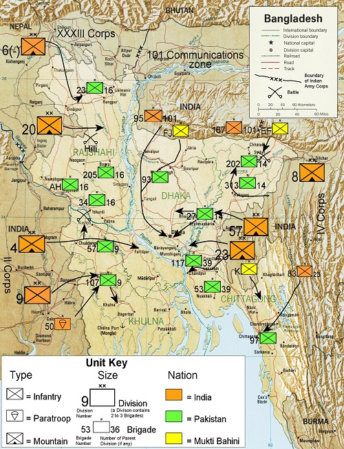
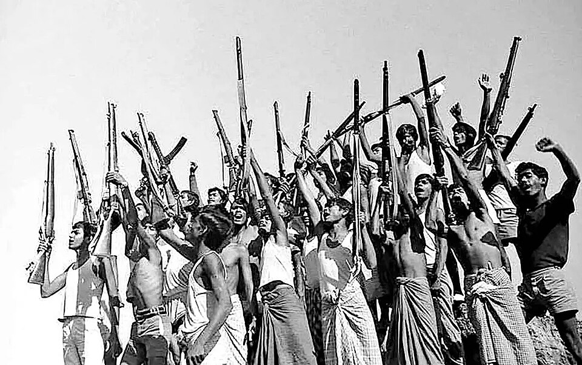
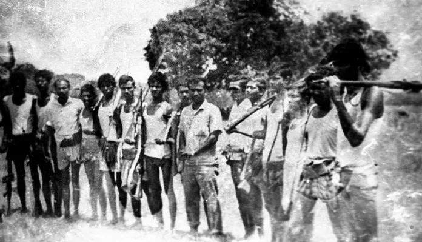
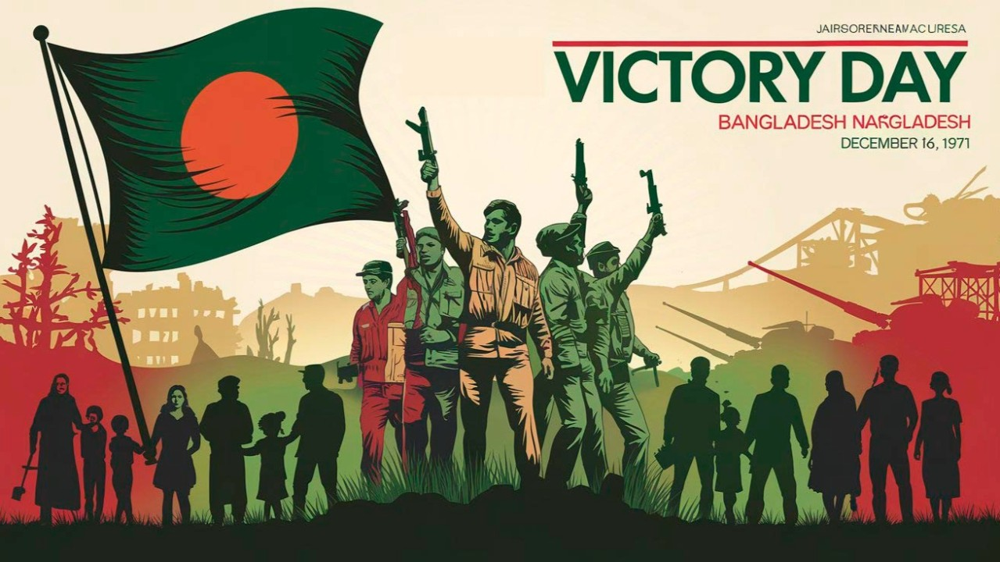
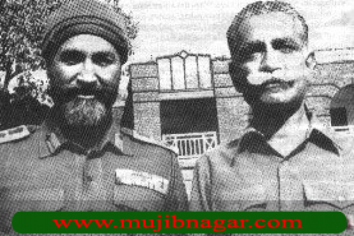

This image is a map/illustration showing strategic troop movements and territorial changes during the 1971 Liberation War. It provides geographical context to the war and helps viewers understand the scale and spread of operations. The map also highlights major battle zones, key routes used by the Mukti Bahini and Indian forces, and the locations where Pakistani troops were heavily concentrated. Important river crossings, communication lines, and liberated areas are often marked to show how the war progressed week by week. These visual details help illustrate the overall strategy, including how the Allied Forces advanced toward Dhaka from multiple directions, eventually surrounding the city. The map essentially provides a clear snapshot of how the liberation forces gradually gained control, making it easier for viewers to understand the war’s timeline and geographic challenges. The map also highlights major battle zones, key routes used by the Mukti Bahini and Indian forces, and the locations where Pakistani troops were heavily concentrated. Important river crossings, communication lines, and liberated areas are often marked to show how the war progressed week by week. These visual details help illustrate the overall strategy, including how the Allied Forces advanced toward Dhaka from multiple directions, eventually surrounding the city. The map essentially provides a clear snapshot of how the liberation forces gradually gained control, making it easier for viewers to understand the war’s timeline and geographic challenges.
This photograph captures the jubilant celebrations of freedom fighters and citizens in Dhaka on 16 December 1971, the day when victory was declared and Bangladesh achieved independence. It reflects the emotional release and national joy after the long struggle. The map also highlights major battle zones, key routes used by the Mukti Bahini and Indian forces, and the locations where Pakistani troops were heavily concentrated. Important river crossings, communication lines, and liberated areas are often marked to show how the war progressed week by week. These visual details help illustrate the overall strategy, including how the Allied Forces advanced toward Dhaka from multiple directions, eventually surrounding the city. The map essentially provides a clear snapshot of how the liberation forces gradually gained control, making it easier for viewers to understand the war’s timeline and geographic challenges.


This powerful image shows Indian soldiers alongside Bangladeshi freedom fighters shortly after liberation — symbolizing cooperation and the shared struggle that led to victory. The map also highlights major battle zones, key routes used by the Mukti Bahini and Indian forces, and the locations where Pakistani troops were heavily concentrated. Important river crossings, communication lines, and liberated areas are often marked to show how the war progressed week by week. These visual details help illustrate the overall strategy, including how the Allied Forces advanced toward Dhaka from multiple directions, eventually surrounding the city. The map essentially provides a clear snapshot of how the liberation forces gradually gained control, making it easier for viewers to understand the war’s timeline and geographic challenges.
his photograph depicts freedom fighters and Indian army personnel celebrating victory on 16 December 1971, holding the portrait of national leader as a mark of respect and solidarity. The map also highlights major battle zones, key routes used by the Mukti Bahini and Indian forces, and the locations where Pakistani troops were heavily concentrated. Important river crossings, communication lines, and liberated areas are often marked to show how the war progressed week by week. These visual details help illustrate the overall strategy, including how the Allied Forces advanced toward Dhaka from multiple directions, eventually surrounding the city. The map essentially provides a clear snapshot of how the liberation forces gradually gained control, making it easier for viewers to understand the war’s timeline and geographic challenges.


This image is part of a larger archive documenting various phases of the 1971 Liberation War: the suffering, sacrifices, guerrilla operations, and eventual triumph. Such archives help preserve the memory of those events for future generations. The map also highlights major battle zones, key routes used by the Mukti Bahini and Indian forces, and the locations where Pakistani troops were heavily concentrated. Important river crossings, communication lines, and liberated areas are often marked to show how the war progressed week by week. These visual details help illustrate the overall strategy, including how the Allied Forces advanced toward Dhaka from multiple directions, eventually surrounding the city. The map essentially provides a clear snapshot of how the liberation forces gradually gained control, making it easier for viewers to understand the war’s timeline and geographic challenges.